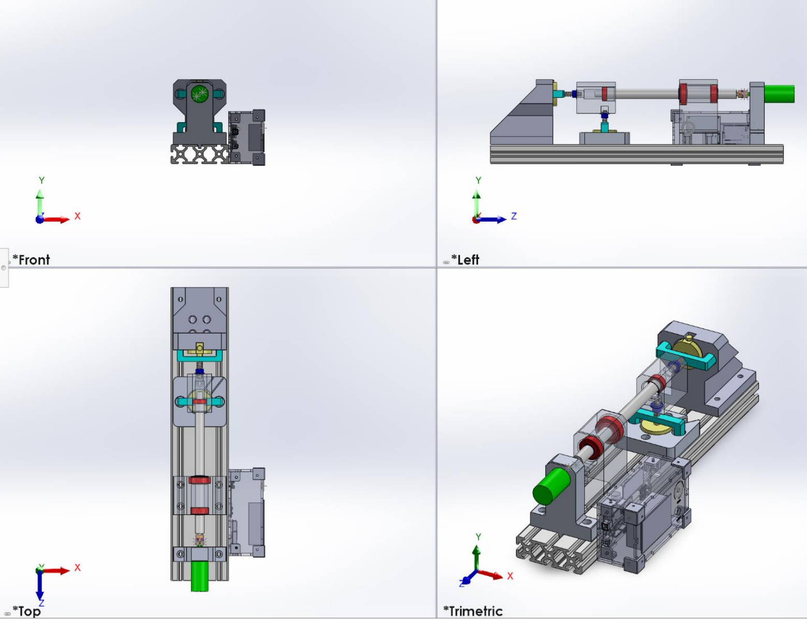
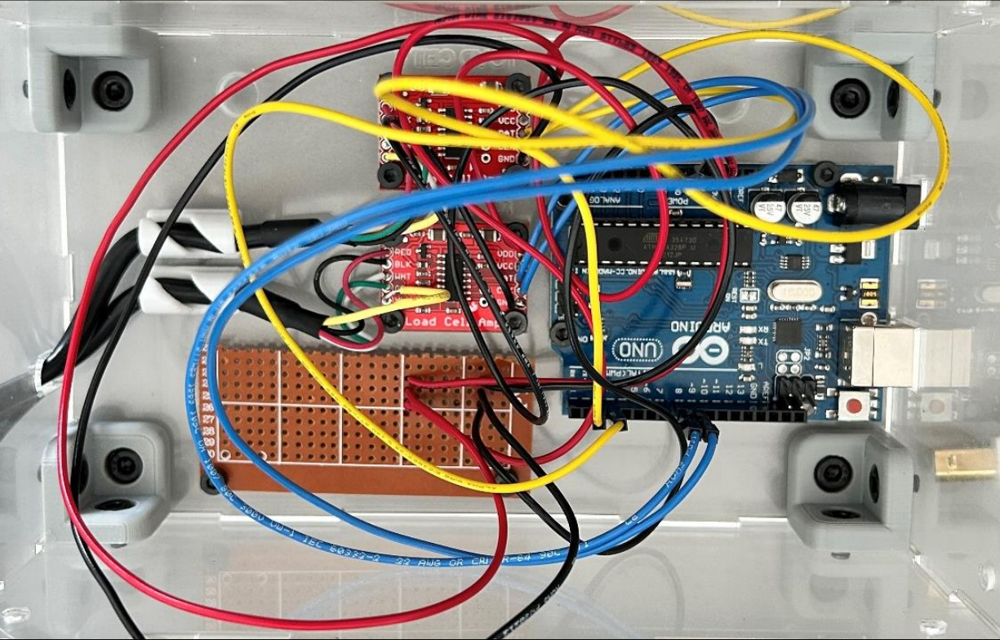
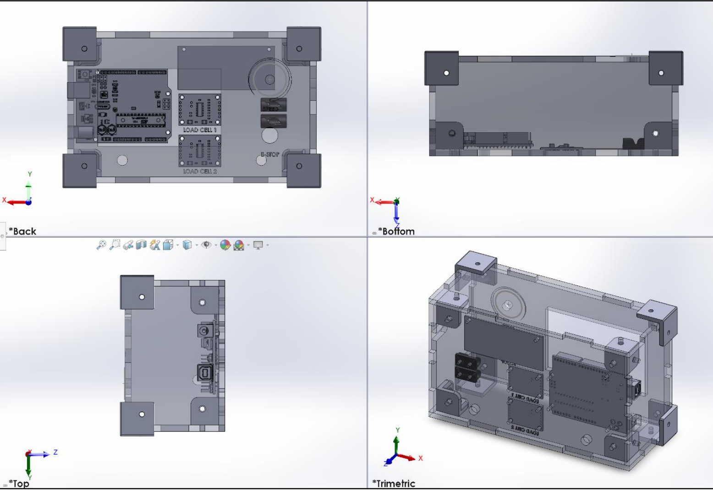

Bearing Testing Machine
Design Description
- This machine was developed to conduct failure analysis of bearings by collecting load, RPM and temperature data.
This was designed to be portable for use as a teaching aid at the University of Waterloo.
Process
- Parts were designed and assembled using SolidWorks and then made using a combination of 3D printing, laser cutting and machining.
- Arduino code was developed, and electrical components were connected and soldered to ensure accurate readings.
Results
- Load cells provided accurate readings up to ±0.5kg of the force applied to the bearings.
- Electronic housing allowed components to be protected during transport and use.
- Design facilitated the addition of temperature sensors to provide a more detailed failure analysis.
Homepage